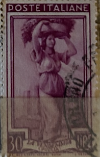
| SOURCE | TITLE| IMAGE MATCH | click to source page |
| 17 idee su Francobolli che ho | francobolli, francobollo design, posta aerea | 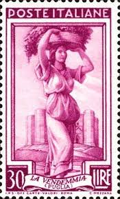 | |
| WordPress.com | Poster Stamps: Bite-Sized Pieces of Art (But Don't Eat Them, Please) – Yellow Door Mercantile | 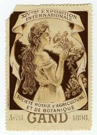 |
| Liebig's Extract of Meat trading cards | 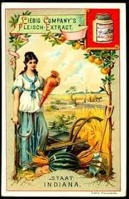 | |
| The Map House | Liebig's Extract, Indiana - Tradecard, 1900 c. | The Map House | 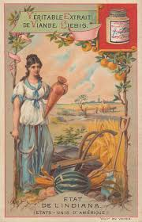 |
| Etsy | Bog Moss Romantic Postcard - Beautiful Edwardian Original Lily of Killarney Made From the Soil of Old Ireland - Etsy | 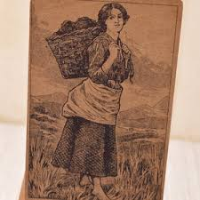 |
| WorthPoint | N188 WM. S. KIMBALL "GODDESSES- GREEKS & ROMANS" CERES AGRICULTURE TOBACCO CARD | #1933473237 | 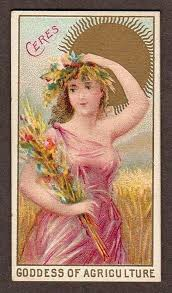 |
| arnoldtradecards.com | page 127 -- Helen's Babies, Deacon Crankett, John Habberton, Yellow Dock Root | 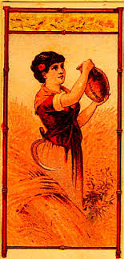 |
| SoleryLlach | CUBA. 1882-83. FISCALES. SERIE COMPLETA, 11 valores. 37 1/2 | 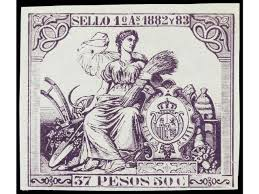 |
| PicClick | 1888 TOBACCO CARD of Actress Flora Walsh "Seal of North Carolina" Plug Cut $74.95 - PicClick | 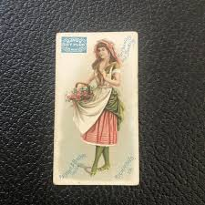 |
| Avion Thematics | Rhodesia 1967-68 Dual Currency 2s5d/25c Tiger Fish Unmounted Mint, SG 412, stamps on fish | 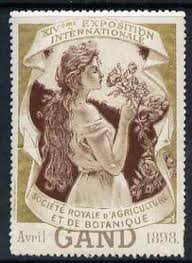 |
| eBay | PHILIPPINES, 1882-83. Revenue Stamped Paper Official , 5 Cent, L-- | eBay | 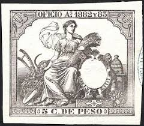 |
| PICRYL | Indiana State Fair and Exposition. Twenty-second annual exhibition under the auspices of the Indiana State Board of Agriculture, commencing September 7th, and continuing 30 days. Live stock show, the week commencing September | 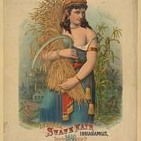 |
| Media Storehouse | Costume Toscano Print, Italian School, 20th century. Art Prints, Posters & Puzzles from Fine Art Finder | 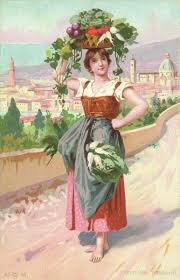 |
| Ash Rare Books | ANTIQUE PRINTS OF LONDON AT ASH RARE BOOKS : SOHO | 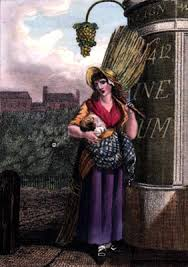 |
| Kreafolk | 30 Best Vineyard Illustration Ideas You Should Check | 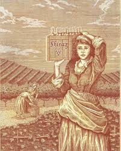 |
| Todocolección | 1882 y 83 sello poliza fiscal 11º 37 1/2 c de p - Buy Stamps of Spanish colonies on Cuba on todocoleccion | 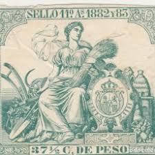 |
| Etsy | Victorian Trade Card Woman With Sheaf of Wheat Albion Milling Michigan Merchant Flour Millers 1800's - Etsy | 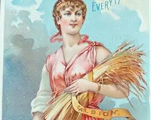 |
| Pin by Mrs Curiosity on Rèclame vintage: Nostalgia & Stile | Vintage italian posters, Vintage posters, Vintage advertisements | 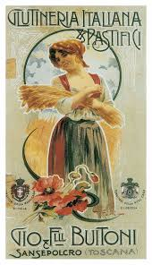 | |
| Album Online | Etiqueta de vino Cayetano del Pino, Jerez de la Frontera. Años 1910. - Album alb2540127 | 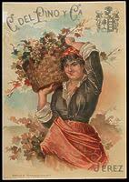 |
| PicClick | Paul Thumann FOR SALE! - PicClick | 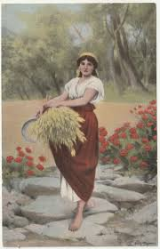 |
| PicClick | Charter Oak Stove FOR SALE! - PicClick | 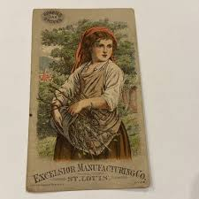 |
| Find Your Stamps Value | Blacksmith, Aosta Valley: Italy at Work Type of 1950 50c Violet blue stamp price, value | 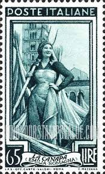 |
| Fanatics Collect | 1916 Parker Brothers Famous Paintings Portrait Artist's Mother RED BACK CGC AUTH on Fanatics Collect | 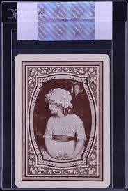 |
| eBay | PORTLAND ME TRADE CARD,GW SIMONTON CO.13&15 UNION St PATAPSCO BAKING POWDER F933 | eBay | 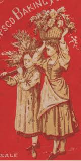 |
| PICRYL | Frimärke ur Gösta Bodmans filatelistiska motivsamling, påbörjad 1950.Frimärke från Italien, 1950. Motiv av apelsinskörd på Sicilien. - PICRYL - Public Domain Media Search Engine Public Domain Search | 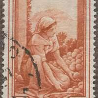 |
| Mecum Auctions | McCormick-Deering 1921 Calendar 12 X 24 For Sale At Auction - Mecum Auctions | 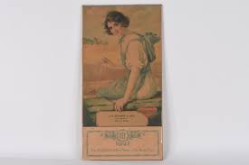 |
| cerebro.com | Cerebro | RICH AND RARE | Original Antique Label Art | 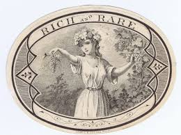 |
| eBay | La Vigne", Souvenir de la Belle Jardinere, 2 Rue du Pont Neuf, Paris, France | eBay | 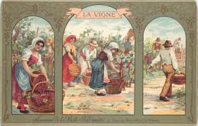 |
| Food and Agriculture Organization | International Institute of Agriculture Collection | 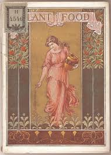 |
| Numistoria | Energie Electrique Maine Anjou | 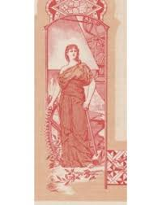 |
| Bridgeman Images | Image of VIRGINIA: TOBACCO LABEL, 1700. Slaves on a Virginia plantation packing | 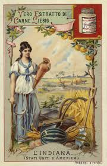 |
| eBay | Vintage Stokely-Van Camp, Inc Stock Certificate #0000 | eBay | 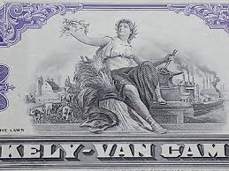 |
| Wikimedia.org | Category:Paintings of Aurora - Wikimedia Commons | 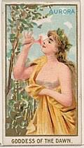 |
| eBay | 1910 $1000 Reich Banknote 21 April 1910 Gnumismatist | eBay | 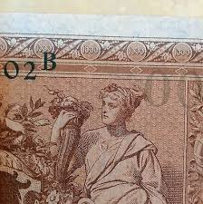 |
| eBay | JOHANNES BRITZE: Exlibris für Emil P. Nielsen, Füllhorn | eBay | 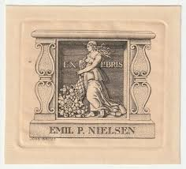 |
| Alamy | Stamp italy hi-res stock photography and images - Page 33 - Alamy | 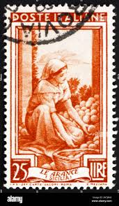 |
| eBay | Stock Certificate The Plume & Atwood Manufacturing Company Connecticut | eBay | 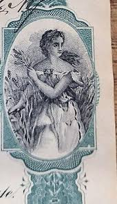 |
| Album Online | poster depicting a French female farm labourer carrying a wheat sheaf 1900 - Album alb3414960 | 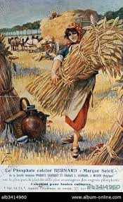 |
| eBay | Donaldson Brothers Cowperthwaits Girl w Gourd Field Vict Card c1880s | eBay | 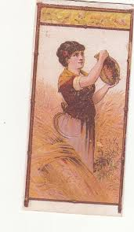 |
| Etsy | Very Interesting Vintage 1932 "agricultural Almanac" John Baer's Sons, Lancaster PA; Recipes, Calendar, Apples, Ferns, Peonies, Seeds, Bride - Etsy | 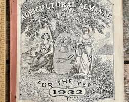 |
| BraggMickele (reluctantcrnvor) - 프로필 | Pinterest | 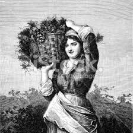 | |
| eBay UK | Art Nouveau 1908 Italian Postcard, Woman with Basket on Head, Color Litho Italy | eBay UK | |
| eBay | 1937 Bank of Canada $2 Note in About Uncirculated Condition Pick #59c | eBay | 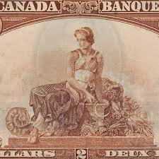 |
| Numizon | 10 francs French Treasury Type 1947 | French Treasury - Occupation after 1945 - The banknote Numizon catalog | 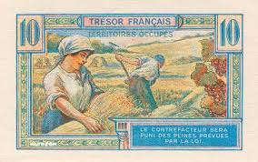 |
| MA-Shops | NOTES OF THE BANQUE DE FRANCE 10 francs 9.9.1943 Banque de France. Billet. mineur, EF | MA-Shops | 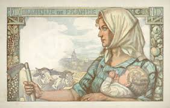 |
| TasteAtlas | Feudo Mondello - Best Gourmet Brands | TasteAtlas | 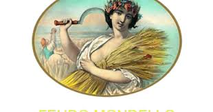 |
| eBay | Plant Food Its Nature Composition & Most Profitable Use German Kali Works | eBay | 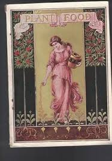 |
| Scripophily.com | National Tea Company - Scripophily.com | Collect Stocks and Bonds | Old Stock Certificates for Sale | Old Stock Research | RM Smythe | | 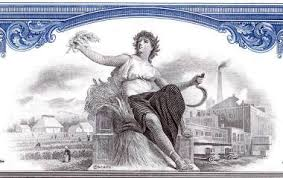 |
| eBay | Spain 1881 attractive 50c Guerrastamp Pencancelled VF | eBay | 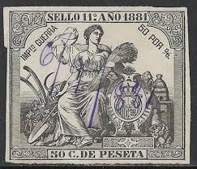 |
| GetArchive | Daphne Pollard, child opera comedienne (SAYRE 1533) - PICRYL - Public Domain Media Search Engine Public Domain Image | 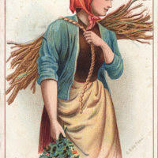 |
| eBay | John Winsch Thanksgiving Postcard Antique 1911 Embossed Unposted Holiday Divided | eBay | |
| eBay | 1890 N80 Duke's Holiday "Harvest Home, Italy" PSA 6 EX-MT Cert #22985114 | eBay | |
| Iparművészeti Múzeum | Ex-libris (bookplate) - Enrico Caruso | Museum of Applied Arts Collection Database | |
| eBay | 10 francs mineur 25-3-1943 F8/8 SPL | eBay | |
| Shutterstock | Albania Circa 1976 Woman Harvesting Grapes Stock Photo 43085500 | Shutterstock | |
| eBay | John Winsch 1911 Thanksgiving Theme NEW METAL SIGN: "A Peaceful Thanksgiving" | eBay | |
| Greysheet | Germany Trésor Français Currency & Banknote Values By Issue | Greysheet | |
| Rawpixel | Indiana, Industries States series (N117) | Free Photo Illustration - rawpixel | |
| eBay | Vintage Traditional Jute Hand Woven Rug(/Zafar(Woman Holding Basket On Head) | eBay |